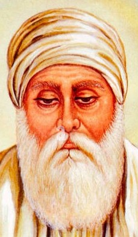
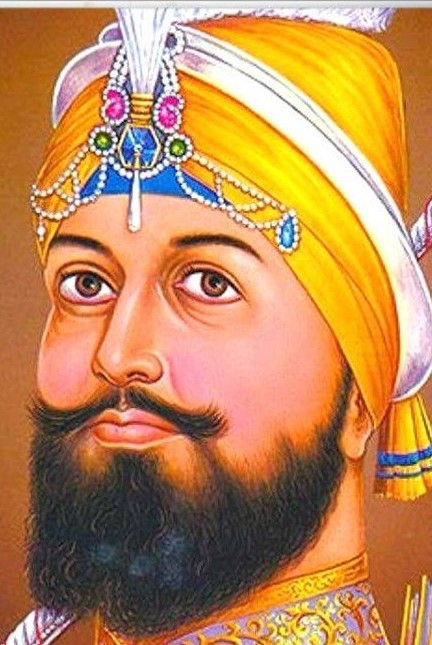

Sikh Stories - Sakhies
Guru Nanak Dev Ji
1. Bhai Lalo and Malik Bhago
A Story of Honesty and Kindness
Guru Nanak Dev Ji
2. Sajjan Thug
A Story of Change and Realization
Guru Nanak Dev Ji
3. Bhoomi Daku De Vaade
A Story of Redemption and Sikh Values
Guru Nanak Dev Ji
4. Vali Kandhari
A Story of Ego and Humility
Guru Nanak Dev Ji
5. Tera Hi Tera
A Story of Devotion, Humility, and Simplicity
Guru Nanak Dev Ji
6. Sacha Sauda
The True Bargain by Guru Nanak Dev Ji
Guru Angad Dev Ji
7. Bhai Mana
A Story of Ego, Obedience, and Transformation

Guru Amar Das Ji
8. Badshah Akbar
A Story of Humility, Langar, and Equality
Guru Ram Das Ji
9. Amrit Sarovar Di Sthapana
Guru Ram Das Ji's Sacred Mission
Guru Arjan Dev Ji
10. Bhai Gopal Ji
A Story of Pure Devotion and Humility
Guru Hargobind Ji
11. Guru Ji Te Sher
A Story of Courage and Spiritual Power
Guru Hargobind Ji
12. Japji Sahib Da Muqabla
A Story of Divine Wisdom and Spiritual Victory
Guru Hargobind Ji
13. Bandi Chhor Diwas
Guru Hargobind Ji Frees the 52 Kings
Guru Har Rai Ji
14. Guru Ji Te Gharra
A Story of Forgiveness and Humility
Guru Har Rai Ji
15. Guru Ji Di Nimarta
A Story of True Humility and Grace
Guru Harkrishan Ji
16. Brahman Te Chhaju
A Story of Wisdom and Humility

Guru Gobind Singh Ji
17. Guru Ji Te Seva Di Mahima
A Story of Humble Service and Spiritual Strength
Guru Gobind Rai
18. Guru Ji Te Birdh Mata
A Story of Compassion and Respect
Back